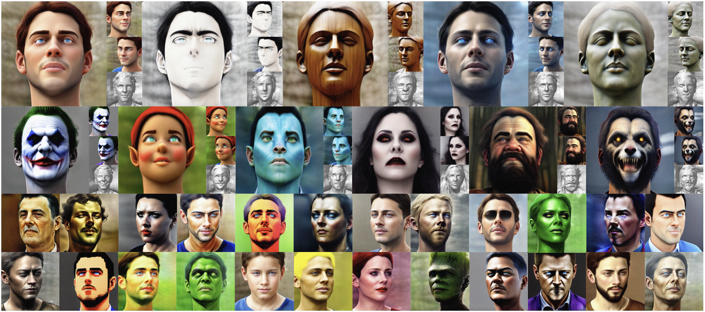
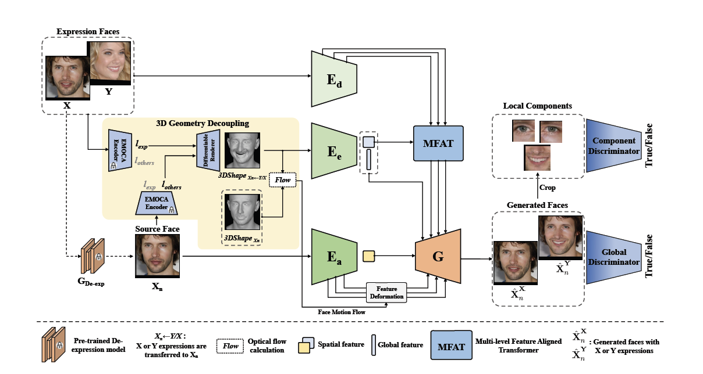
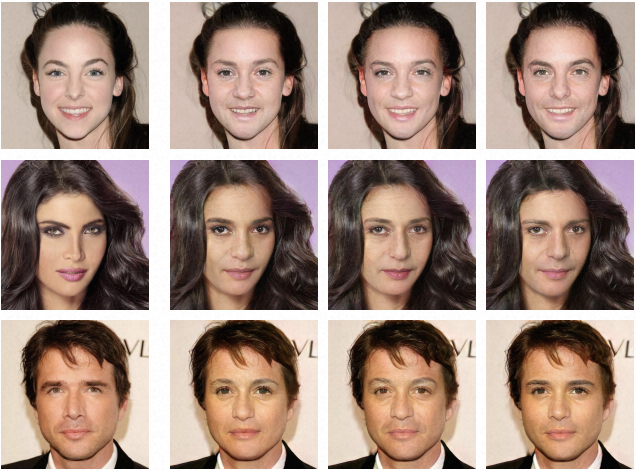

|
Dr. Tianxiang Ma
|
Biography
Tianxiang Ma received the PhD degree from University of Chinese Academy of Sciences (UCAS) in 2024, under the supervision of Prof. Tieniu Tan and Prof. Jing Dong, and the B.Eng. degree from Zhengzhou University (ZZU) in 2019. Since July 2024, he has joined the Intelligent Creation Team, ByteDance Inc as a senior algorithm engineer. He interned at ByteDance Inc. and Alibaba DAMO Academy. His research focuses on computer vision and deep learning, particularly large-scale generative models for content creation, including Image, Video, and 3D Generation.
Personal Experience
 |
ByteDance Inc. Jun. 2024 - Now |
 |
University of Chinese Academy of Sciences (UCAS) Sep. 2019 - Jun. 2024 |
 |
Zhengzhou University (ZZU) Sep. 2015 - Jun. 2019 |
Selected Publications
|  |
Free-style and Fast 3D Portrait Synthesis |
|  |
GaFET: Learning Geometry-aware Facial Expression Translation from In-The-Wild Images |
 |
Semantic 3D-aware Portrait Synthesis and Manipulation Based on Compositional Neural Radiance Field |
 |
CFFT-GAN: Cross-domain Feature Fusion Transformer for Exemplar-based Image Translation |
 |
ReGANIE: Rectifying GAN Inversion Errors for Accurate Real Image Editing |
 |
AdaDeId: Adjust Your Identity Attribute Freely |
|  |
CFA-Net: Controllable Face Anonymization Network with Identity Representation Manipulation |
 |
DesignerGAN: Sketch Your Own Photo |
 |
MUST-GAN: Multi-level Statistics Transfer for Self-driven Person Image Generation |
 |
Any-to-one Face Reenactment Based on Conditional Generative Adversarial Network |
Selected Honors and Awards
2024, WangShouWu Scholarship, Excellence Award, University of Chinese Academy of Sciences
2021, Outstanding Student, University of Chinese Academy of Sciences
2019, 2nd Place Winner of Competition on Adversarial Attacks and Defenses (CAAD) CTF in GeekPwn 2019
2019, Outstanding Undergraduate Thesis of Zhengzhou University
2019, Outstanding Graduates of Zhengzhou University and Henan Province
2017, National Scholarship
2018,2016, 1st prize of Zhengzhou University Student Scholarship
2016, Zhong An Hong Mian Scholarship of Henan Province
Academic Services
Journal Reviewer
IEEE Transactions on Multimedia
Conference Reviewer
CVPR, ICCV, ECCV, AAAI, ICLR, ICML